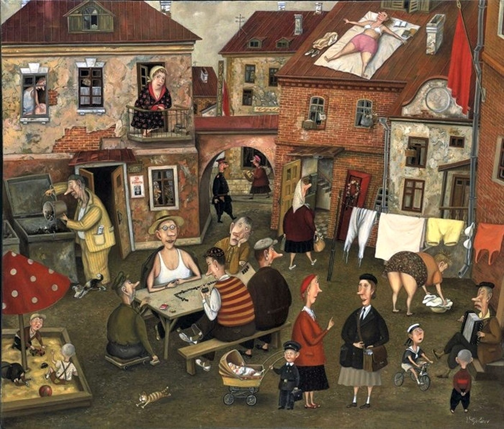
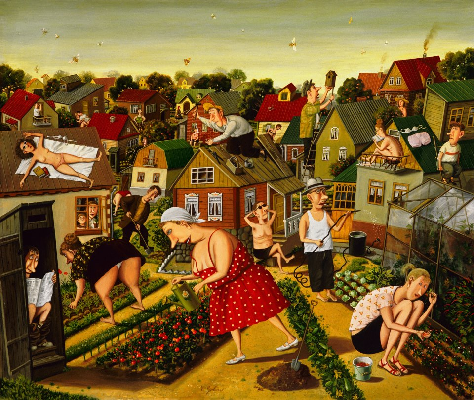
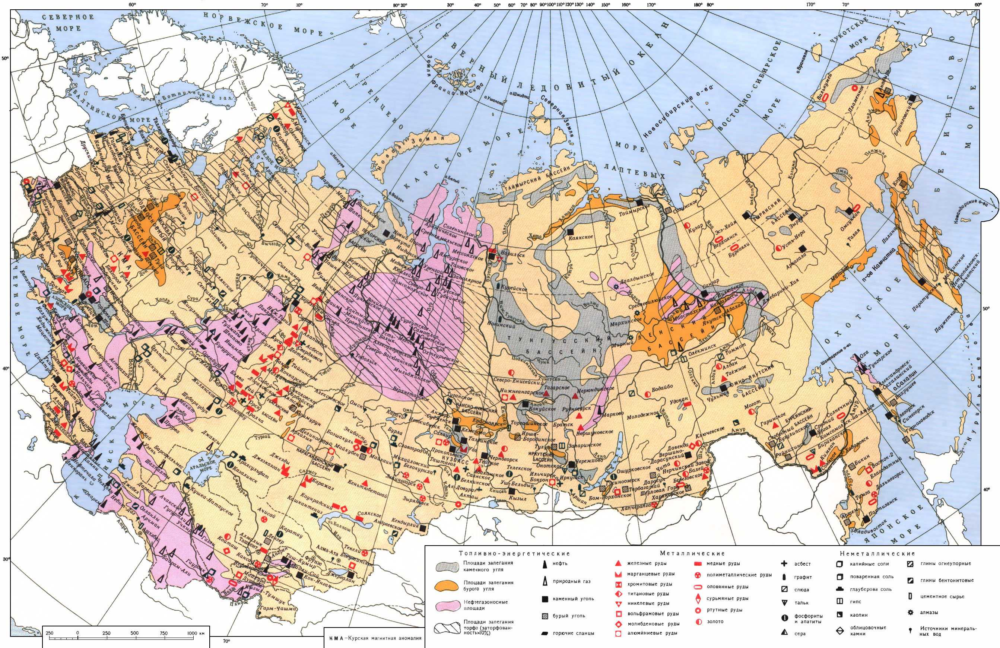
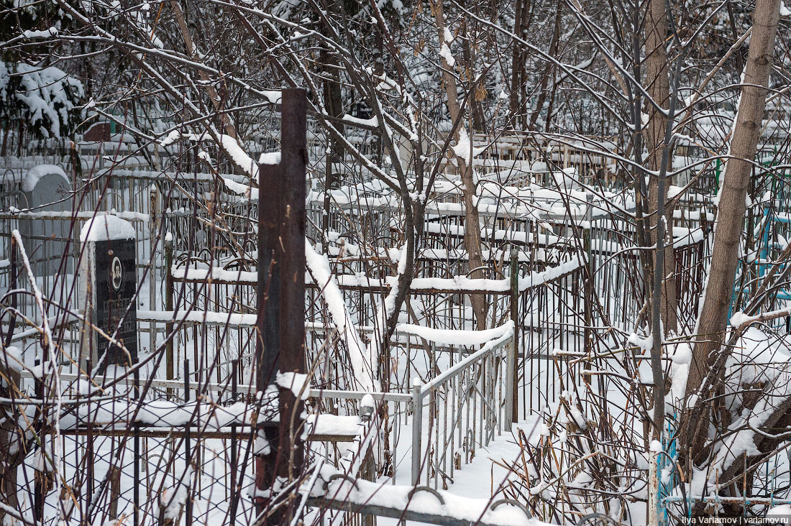

Картинки из моего прошлого

Валентин Губарев, Скромное обаяние неразвитого социализма, 2007
Известно, что после победного 1945 года внутренняя и внешняя политика СССР не изменилась. Мобилизация общества сохранялась до самой смерти вождя в1953 году.
Население, капитал и общественные отношения приобретали всё более казённый тип. Хотя по конституции всё принадлежало народу, но населению не принято было это обсуждать и тем более просить у руководства каких-то благ, кроме тех, которые получали получали в бесконечных очередях. Люди жили в тесноте, во вшах, клопами в спальне и тараканами на кухне.
По-прежнему, как и до войны обобщённая экономика была милитаризирована,нерациональность развития приводила страну победительницу к застою, а впоследствии и к развалу.
В таких дворах завершали свою жизнь участники великой войны. Рядом с ними и я провёл первые 30 лет своей жизни.
В 1965 году жителям Гусь-Хрустального начали вновь раздавать загородные 6соток и это немного расширило тесноту городского быта и количество продуктов на столе.

Валентин Губарев, Дача
Половина этих участков на 6 сотках оказались брошенными в 2000-е годы. Вдруг появившиеся заработки и автомобили вытеснили население с огородов.
Однако все послевоенные годы - были временем упущенных возможностей
Я смотрел на карты полезных ископаемых, поля, леса и реки....и не мог понять как можно так не рационально жить в России!.

Мало чего из этого богатства и ныне освоено населением России.
Теснота и неблагополучие просматривается и на могилах моих несчастных земляков на всех просторах моей необъятной родины.

Б.М.
2011.